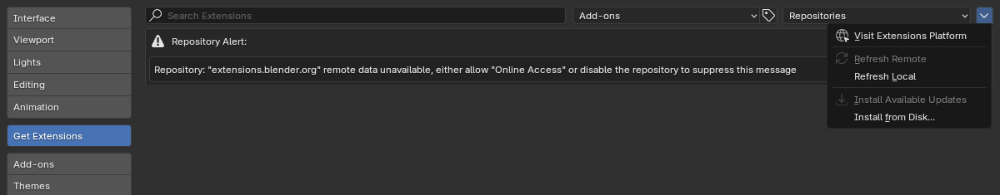
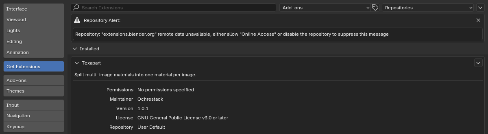
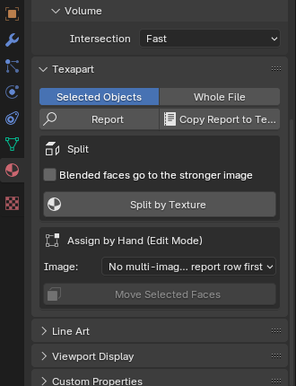

Texapart quick start
Installing Texapart and your first split. The full manual, README.md, is inside the download. Back to the Texapart product page.
Install (Blender 4.2 or newer; tested on 4.2.23, 4.5.16, 5.2.4 and 5.3.0)
- After checkout, download
texapart-1.0.1.zipfrom the link in Polar's email. Install the zip itself; do not unzip it first. - In Blender, open Edit > Preferences and click Get Extensions.
- On a new Blender profile it first says that internet access is required to install and update online extensions, with Continue Offline and Allow Online Access. Texapart needs no internet, so Continue Offline is fine.
- Blender then shows a Repository Alert saying that the remote data of extensions.blender.org is unavailable. That message comes from Blender's online repository, not from Texapart. You can ignore it.
- Open the menu at the top right (the small arrow) and choose Install from Disk....

Preferences > Get Extensions, Blender 4.2.23 on a new profile, after Continue Offline. - Pick
texapart-1.0.1.zipin the file browser and press Install from Disk. Enable on Install is ticked by default. - Texapart appears under Installed, and it is already enabled.

Installed from the zip: version 1.0.1, no permissions.
To update, install the newer zip the same way; Blender replaces the old version and your files are not affected. To remove Texapart, open Get Extensions, find Texapart, open its menu and choose Uninstall. Materials Texapart made stay in your files as ordinary materials.
First split
- Open the Material Properties (the Material tab, the sphere icon near the bottom of the Properties editor's tab column) and find the Texapart panel. Ctrl+click its header to fold the other material panels away. If a label is cut off, drag the border of the Properties editor to make it wider.

The panel at Blender's default Properties width, before any report. - Pick the scope: Selected Objects (the selected meshes) or Whole File (every mesh object in the file, in every scene, and also objects not linked to any scene).
- Press Report. It lists every material that shows two or more images. Each image has a row with its face count; the box under the list says what decides it, for example
attribute 'tex_slot' (Face)orUDIM tile 1002. Faces Texapart will not place by itself get a row with the reason, such asblended: factor 0.4ormask image. The report changes nothing. Copy Report to Text Editor writes the same list to a text block named "Texapart Report". - In Edit Mode, click a row to select exactly its faces in the viewport.
- Press Split by Texture. Each face moves to a one-image material for the image it showed. The summary below the buttons gives materials before and after, faces placed per image and faces listed. The whole split is one undo step (Ctrl+Z). Pressing it again on split materials does nothing and says so. Blended faces go to the stronger image is off by default: a face that shows a blend of two images stays on the original material and is listed.
- Faces the report lists: in Edit Mode select them (a click on their row does it), pick the image under Assign by Hand (Edit Mode) > Image: and press Move Selected Faces.
- Export with Blender's own exporters, for example File > Export > glTF 2.0 or FBX. Each material now holds one image.
What changes in your file: the material slots of the objects you ran it on and, for faces that read a second UV map or a UDIM tile, their UVs (the old first UV map is kept as "UVMap before Texapart", named after your first map). Each original material stays in the file with a fake user and its nodes are not edited. An object whose mesh is shared with an object outside the run is skipped and named in the summary.
Limits
- Tested on Blender 4.2.23, 4.5.16, 5.2.4 and 5.3.0 on Linux; requires 4.2 or newer. Windows and macOS have not been tested. Checked in Godot 4.7; not opened in Unity or Unreal.
- Images mixed by a painted mask image, procedural textures and anything else that varies inside one face are listed, not split. Faces seen through a colour adjustment, or under an Emission or other shader that is neither Principled BSDF nor Diffuse BSDF, are listed too. The full list is in the manual.
- Normal, roughness and metallic maps are not carried into the new materials. No baking, atlases or merging.
Privacy
Texapart makes no network connections and sends nothing anywhere.
Support
Email support@ochrestack.com with your Blender version and, if you can, the Texapart Report text (Copy Report to Text Editor, then copy the text block).